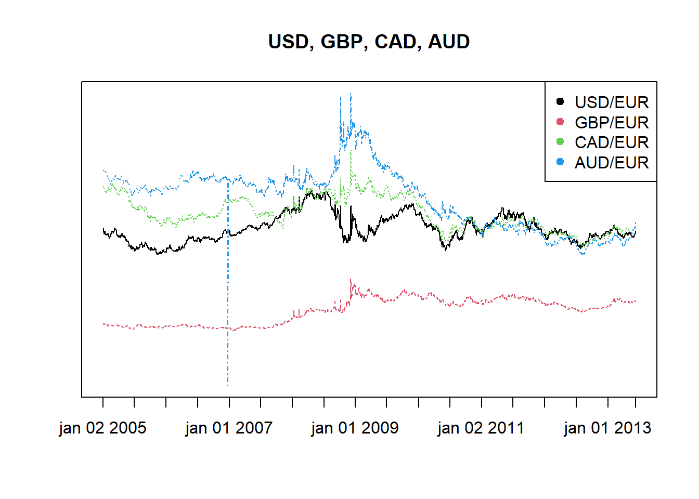
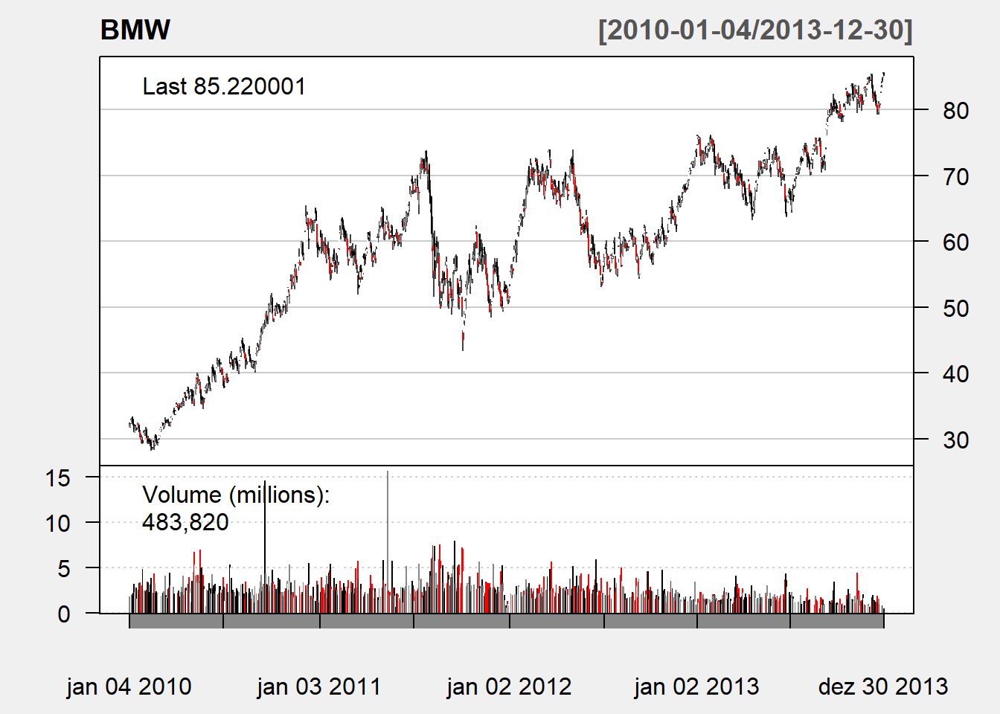
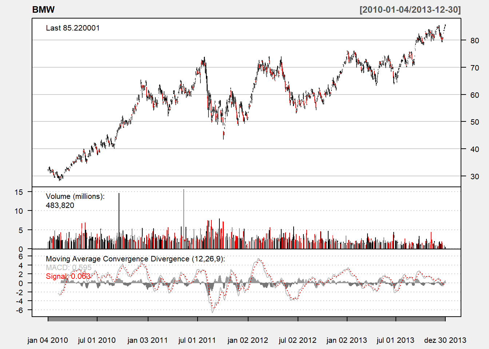
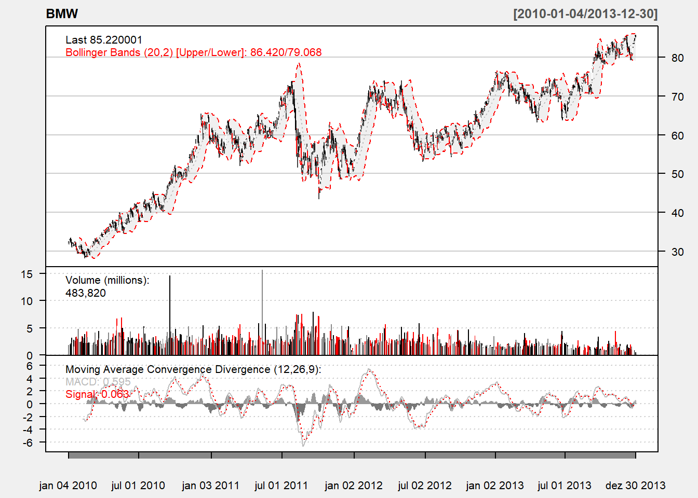
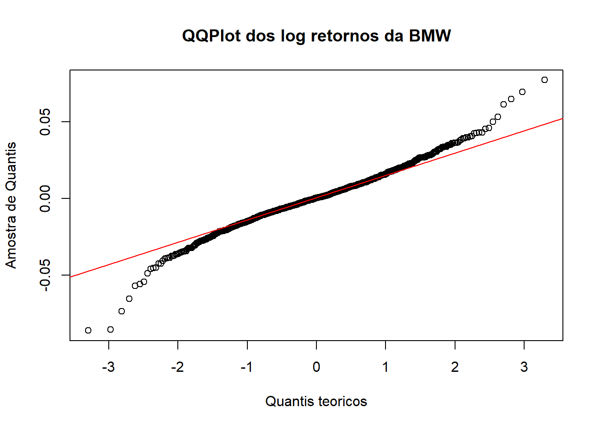

Este tutorial visa demonstrar com alguns exemplos práticos como o software livre R pode ser utilizado para trabalhar com Big Data.
Neste tutorial, trataremos de um dos maiores desafios da alta performance da análise financeira e gerenciamento de dados; isto é, como lidar com grandes conjuntos de dados de forma eficiente e sem falhas usando o R.
O principal objetivo é fornecer uma introdução prática sobre como acessar e gerenciar grandes conjuntos de dados em R. Este tutorial não se concentra em nenhum teorema financeiro específico, mas visa dar exemplos práticos para pesquisadores e profissionais de como implementar análises e modelos intensivos em computação que alavancam grandes conjuntos de dados no ambiente R.
Na primeira parte deste tutorial, explicamos como acessar dados diretamente para vários fontes abertas. O R oferece várias ferramentas e opções para carregar dados no ambiente sem requisitos prévios de gerenciamento de dados. Esta parte do trabalho objetiva guiá-lo através de exemplos práticos sobre como acessar dados usando o \(\fbox{Quandl}\) e pacotes \(\fbox{qualtmod}\).
Na segunda parte deste tutorial, destacaremos a limitação do R para lidar com big data e mostrar exemplos práticos sobre como carregar uma grande quantidade de dados em R com a ajuda de grandes pacotes de memória e \(\fbox{ff}\). Nós também mostraremos como executar análises estatísticas essenciais, como \(k-\)mean clustering e regressão linear, usando grandes conjuntos de dados.
A extração de séries temporais financeiras ou dados transversais de fontes abertas é um dos os desafios de qualquer análise acadêmica. Há vários anos, a acessibilidade de dados públicos para análise financeira eram muito limitados; nos últimos anos, cada vez mais bancos de dados de acesso aberto estão disponíveis, oferecendo enormes oportunidades para analistas em qualquer área.
Nesta seção, apresentaremos os pacotes \(\fbox{Quandl}\) e \(\fbox{quantmod}\), duas ferramentas específicas que pode ser usado para acessar e carregar facilmente dados financeiros no ambiente R. Guiaremos você por dois exemplos para mostrar como essas ferramentas podem ajudar analistas para integrar dados diretamente de fontes sem nenhum gerenciamento prévio de dados.
Quandl.com é um site de código aberto para séries financeiras, indexando milhões de conjuntos de dados financeiros, econômicos e sociais de 500 fontes. O pacote \(\fbox{Quandl}\) interage diretamente com a API \(\fbox{Quandl}\) para oferecer dados em vários formatos utilizáveis em R.
Além de baixar dados, os usuários também podem fazer upload e editar seus próprios dados, pesquisar em qualquer uma das fontes de dados diretamente do R.upload e pesquisar quaisquer dados.
No primeiro exemplo simples, mostraremos como recuperar e plotar as séries temporais da taxa de câmbio com \(\fbox{Quandl}\) de uma maneira fácil. Antes de podermos acessar quaisquer dados do \(\fbox{Quandl}\), precisamos instalar e carregar o pacote \(\fbox{Quandl}\) usando os seguintes comandos:
#Carrega os pacotes necessarios
#install.packages(Quandl)
#install.packages(quantmod)
library(quantmod)
library(Quandl)
library(xts)Baixaremos as taxas de câmbio em EUR para USD, CHF, GBP, JPY, RUB, CAD e AUD entre 1 de janeiro de 2005 e 30 de maio de 2014. Os seguintes comandos especificam como selecionar uma série temporal e um período específicos para a análise:
#Baixa as taxas de cambio
moedas <- c( "USD", "CHF", "GBP", "JPY", "RUB", "CAD", "AUD")
moedas <- paste("CURRFX/EUR", moedas, sep = "")
moedas_ts <- lapply(as.list(moedas), Quandl, start_date="2005-01-01",end_date="2013-06-07", type="xts")Como próximo passo, visualizaremos a evolução da taxa de câmbio de quatro selecionadas moedas, USD, GBP, CAD e AUD, usando a função \(\fbox{matplot()}\). A seguir demonstramos os resultados desse código:
#Plota a evolucao das taxas de cambio
Q<-cbind(moedas_ts[[1]]$Rate,moedas_ts[[3]]$Rate,moedas_ts[[6]]$Rate,moedas_ts[[7]]$Rate)
matplot(Q, type = "l", xlab = "", ylab = "", main = "USD, GBP, CAD, AUD",xaxt = 'n', yaxt = 'n')
ticks = axTicksByTime(moedas_ts[[1]])
#abline(v = ticks,h = seq(min(Q), max(Q), length=5), col = "grey", lty = 4)
axis(1, at = ticks, labels = names(ticks))
#axis(2, at = seq(min(Q), max(Q), length=5), labels = round(seq(min(Q), max(Q), length=5), 1))
legend("topright", legend = c("USD/EUR", "GBP/EUR", "CAD/EUR", "AUD/EUR"), col = 1:4, pch = 19)
No segundo exemplo, demonstraremos o uso do pacote \(\fbox{quantmod}\) para acessar, carregar e investigar dados de fontes abertas. Uma das grandes vantagens do pacote \(\fbox{quantmod}\) é que ele trabalha com uma variedade de fontes e acessos dados diretamente para o Yahoo!Finances, Google Finance ou Dados econômicos do Federal Reserve (FED).
Neste exemplo, acessaremos as informações de preço das ações da BMW e analisaremos o desempenho da empresa fabricante de automóveis desde 2010:
Na Web, obteremos os dados de preços das ações da BMW no Yahoo!Finances para o período determinado. O pacote \(\fbox{quantmod}\) fornece uma função fácil de usar, \(\fbox{getSymbols()}\), para baixar dados de fontes locais ou remotas. Como o primeiro argumento da função, precisamos definir o vetor de caracteres especificando o nome do símbolo carregado. O segundo especifica o ambiente em que o objeto é criado:
bmw_acoes<- new.env()
getSymbols("BMW.DE", env = bmw_acoes, src = "yahoo", from =as.Date("2010-01-01"), to = as.Date("2013-12-31"))## 'getSymbols' currently uses auto.assign=TRUE by default, but will
## use auto.assign=FALSE in 0.5-0. You will still be able to use
## 'loadSymbols' to automatically load data. getOption("getSymbols.env")
## and getOption("getSymbols.auto.assign") will still be checked for
## alternate defaults.
##
## This message is shown once per session and may be disabled by setting
## options("getSymbols.warning4.0"=FALSE). See ?getSymbols for details.## [1] "BMW.DE"Como próximo passo, precisamos carregar a variável BMW.DE do ambiente \(\fbox{bmw_acoes}\) para um vetor. Com a ajuda da função \(\fbox{head()}\), também podemos mostrar as primeiras seis linhas dos dados:
BMW<-bmw_acoes$BMW.DE
head(BMW)## BMW.DE.Open BMW.DE.High BMW.DE.Low BMW.DE.Close BMW.DE.Volume
## 2010-01-04 31.820 32.455 31.820 32.050 1808170
## 2010-01-05 31.960 32.410 31.785 32.310 1564182
## 2010-01-06 32.450 33.040 32.360 32.810 2218604
## 2010-01-07 32.650 33.200 32.380 33.100 2026145
## 2010-01-08 33.335 33.430 32.515 32.655 1925894
## 2010-01-11 32.995 33.050 32.110 32.170 2157825
## BMW.DE.Adjusted
## 2010-01-04 21.72463
## 2010-01-05 21.90087
## 2010-01-06 22.23979
## 2010-01-07 22.43635
## 2010-01-08 22.13472
## 2010-01-11 21.80597O pacote \(\fbox{quantmod}\) também está equipado com uma capacidade de gráficos financeiros.
A função \(\fbox{chartSeries()}\) permite não apenas visualizar, mas também interagir com os gráficos. Com sua funcionalidade expandida, também podemos adicionar uma ampla variedade de indicadores técnicos e comerciais para um gráfico básico; essa é uma funcionalidade muito útil para análise técnica.
Em nosso exemplo, adicionaremos as bandas de Bollinger usando o comando \(\fbox{addBBands()}\) e o indicador de momento seguindo a tendência MACD usando o comando \(\fbox{addMACD()}\) para obter mais informações sobre a evolução do preço das ações. O gráfico a seguir demonstra o resultado:
chartSeries(BMW,multi.col=TRUE,theme="white")
addMACD()
addBBands()
Por fim, calcularemos o retorno diário das ações da BMW para o período determinado.
Também gostaríamos de investigar se os retornos têm distribuição normal.
A figura a seguir mostra os retornos diários das ações da BMW na forma de um plot Q-Q normal:
BMW_retorno <- log(BMW$BMW.DE.Close/BMW$BMW.DE.Open)
qqnorm(BMW_retorno, main = "QQPlot dos log retornos da BMW",xlab = "Quantis teoricos",ylab = "Amostra de Quantis", plot.it = TRUE, datax = FALSE)
qqline(BMW_retorno, col="red")
A captura de tela a seguir exibe a saída do código anterior para mostrar os retornos diários de log das ações da BMW na forma de um gráfico Q-Q normal.
Big data refere-se às situações em que volume, velocidade ou uma variedade de dados excede as habilidades de nossa capacidade computacional para processá-las, armazená-las e analisá-las.
A análise de big data deve lidar não apenas com grandes conjuntos de dados, mas também com análises intensivas, simulações e modelos com muitos parâmetros.
O aproveitamento de grandes amostras de dados pode fornecer vantagens significativas no campo de finanças quantitativas; podemos relaxar as hipóteses de linearidade e normalidade, gerar melhores modelos de predição ou identificar eventos de baixa frequência.
No entanto, a análise de grandes conjuntos de dados levanta dois desafios: Primeiro, a maioria das ferramentas de análise quantitativa têm capacidade limitada para lidar com dados massivos e até cálculos simples e tarefas de gerenciamento de dados podem ser difíceis de executar.
Segundo, mesmo sem o limite de capacidade, o cálculo em grandes conjuntos de dados pode ser extremamente demorado.
Embora o R seja um programa poderoso e robusto com um rico conjunto de algoritmos estatísticos e capacidades, uma das maiores deficiências é seu potencial limitado de escalar para tamanhos de dados grandes. A razão para isso é que o R requer os dados nos quais opera para ser carregado primeiro na memória. No entanto, o sistema operacional e a arquitetura do sistema só pode acessar aproximadamente 4 GB de memória. Se o conjunto de dados atingir a RAM limiar do computador, pode literalmente tornar-se impossível trabalhar com computador padrão com um algoritmo padrão.
Às vezes, até pequenos conjuntos de dados podem causar sérios problemas de computação em R, pois o R tem que armazenar o maior objeto criado durante o processo de análise.
O R, no entanto, possui alguns pacotes para preencher a lacuna e fornecer suporte eficiente a grandes análise de dados. Nesta seção, apresentaremos dois pacotes específicos que podem ser ferramentas úteis para criar, armazenar, acessar e manipular dados massivos.
Primeiro, apresentaremos o pacote \(\fbox{bigmemory}\), que é uma opção amplamente usada para computação estatística em larga escala. O pacote e seus irmãos (biganalytics, bigtabulate e bigalgebra) abordam dois desafios no manuseio e análise de conjuntos de dados massivos: gerenciamento de dados e análise estatística. As ferramentas são capazes de implementar matrizes maciças que não se encaixam no ambiente de tempo de execução do R e apoiam sua manipulação e exploração.
Uma alternativa para o pacote \(\fbox{bigmemory}\) é o pacote \(\fbox{ff}\). Este pacote permite usuários do R manipularem vetores e matrizes grandes e trabalhar com vários arquivos de dados grandes simultaneamente. A grande vantagem dos objetos \(\fbox{ff}\) é que eles se comportam como R comuns vetores.
No entanto, os dados não são armazenados na memória; e sim no disco. Nesta seção, mostraremos como esses pacotes podem ajudar os usuários do R a superar a limitações dele para lidar com conjuntos de dados muito grandes. Embora os conjuntos de dados que usamos aqui de tamanho simples, eles demostram efetivamente o poder dos pacotes de big data.
Adler, D., Nenadic, O., Zucchini, W.,Gläser, C. (2007): The ff package: Handling Large Data Sets in R with Memory Mapped Pages of Binary Flat Files
Enea, M. (2009): Fitting Linear Models and Generalized Linear Models with large data sets in R. In book of short papers, conference on “Statistical Methods for the analysis of large data-sets”, Italian Statistical Society, Chieti-Pescara, 23-25 September 2009, 411-414.
Kane, M.,Emerson, JW., Weston (2010): The Bigmemory Project, Yale University.
Kane, M.,Emerson, JW., Weston, S. (2013): Scalable Strategies for Computing with Massive Data. Journal of Statistical Software , Vol. 55, Issue 14
Lumley, T. (2009) biglm: bounded memory linear and generalized linear models. R package version 0.7
Xie, Y. Dynamic Documents with R and knitr 2nd edition, 2015.